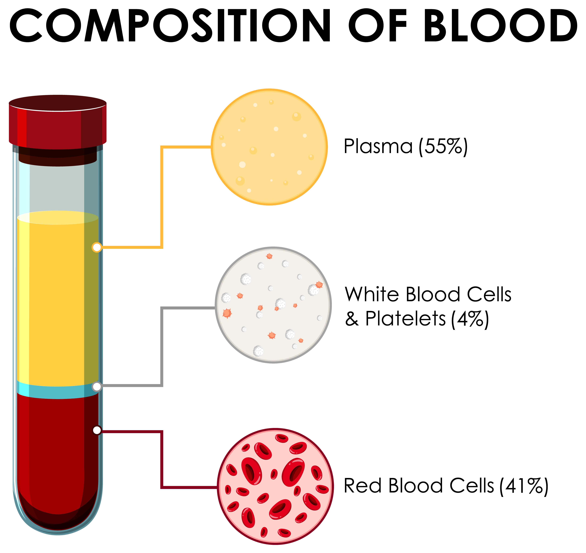

The possible treatement of COVID 19
The COVID-19, aka corona virus has been and has affected billions of people around the world. Till today (August 26, 2020), the corona virus has infected around 5,992,744 people and death count has reached to 827,828 people around the world. In USA total number of infected people has reached 5,992,744 and death has reached 183,342. Because of the virus, the market has shut down, many of the states has not yet opened the lockdown completely. Most of the jobs are doing work from home as far as possible. The government is taking stretegic moves to control the increasing number of virus infection.

Nobody can say when it will stop. Some doctors has predicted that we should adapt the virus in our life and live with it until its medicine is developed.
Progress on Corona Virus Vaccine
In the meantime, doctors are treating the COVID patients with antiviral drugs that were developed for other viruses, and antibodies from people who have recovered from COVID-19. One of the treatement doctors are investigating is "the convalescent Plasma"
What is Convalescent Plasma
Plasma is the liquid portion of blood that remains after removing red blood cells, white blood cells and platelets and other cellular components from the blood. Our blood contains about 55% plasma.
When people recover from COVID-19, their blood contains antibodies that their bodies produced to fight the coronavirus and help them get well. Antibodies are found in plasma, a component of blood. The therapy used to treate any virus or disease with this covalescent plasma has been in practice from more than 100 years ago. The antibody-containing plasma from a recovered patient is given by transfusion to a patient who is suffering from COVID-19. This treatement therapy has been used for treatement of measles, polio, chickenpox, and SARS.
Is this treatement Approved?
A recent analysis of 35,000 hospitalized patients who received convalescent plasma to treat severe COVID-19 suggests that the therapy may reduce the risk of dying. The data comes from the ongoing Expanded Access Program (EAP) led by the Mayo Clinic. The researchers found that patients with (or at risk of) severe COVID-19 who received convalescent plasma within three days of diagnosis were less likely to die than patients who received convalescent plasma later in their illness.
In many other countries also, many COVID-19 patients has been successfully treated by this therapy. So scientients are expecting this therapy could be the best way of treating COVID-19 patients which in many cases has been successful.
On 23rd August, FDA has also issued authorization to use plasma transfussion treatement from patients who have recovered from Covid-19 as a treatment for the disease.
This therapy to treate a COVID-19 patients is still under study. If successful, this treatement will be the most easiest, most cost effective and shortest way to treat the COVID-19 patients. The patients do not have to use any kind of drugs. They are just transfused with a blood plasma from already cured COVID-19 patients.